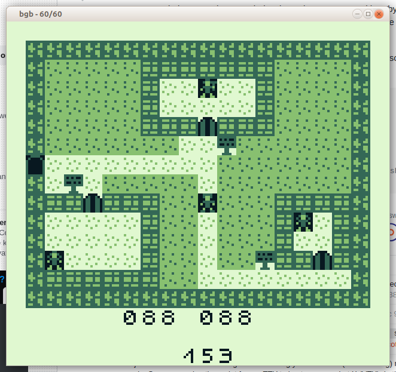
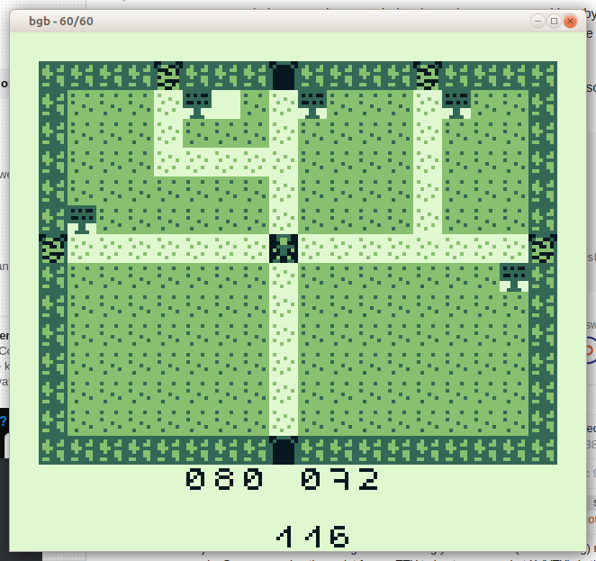
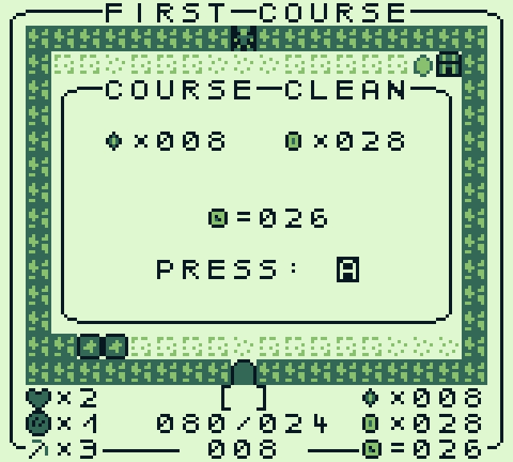
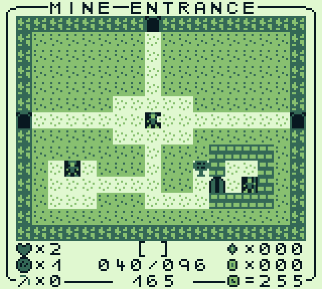
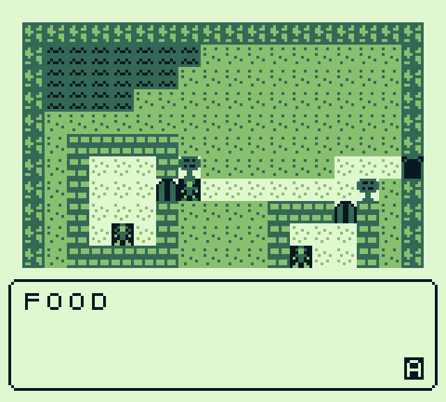
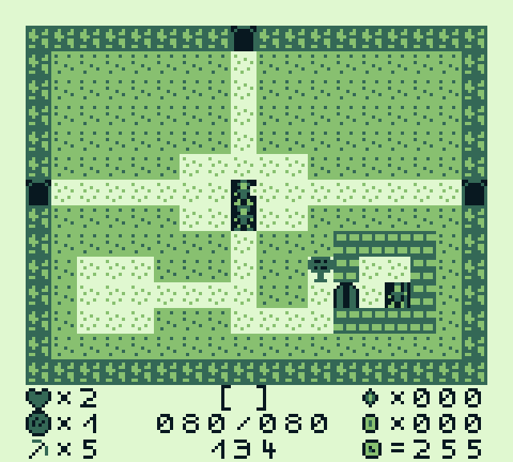
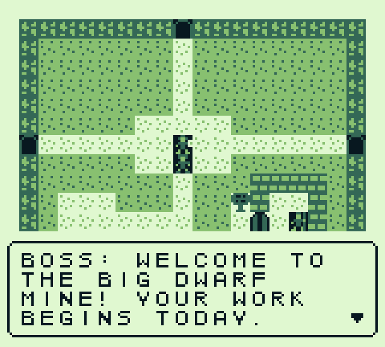

Meine Webseite
Gameboyspiel Graeber 2
[Startseite] [Artikel] [Astronomie] [Spieleentwicklung]
[Naturkunde] [Rechtliches]
[Gameboy]
[PC]
[Graeber]
[Graeber 2][Klauen][Verlies]
Graeber 2
ist ein Adventure Digger Spiel für den Gameboy. Es wurde ursprünglich für die #gbcompo21 entwickelt. Da absehbar
war, dass das Spiel bis dahin nicht fertig wird, wird es losgelöst davon entwickelt.
Medien







Github-Repo
Youtube Video
Letzte Änderungen: 08.08.2025